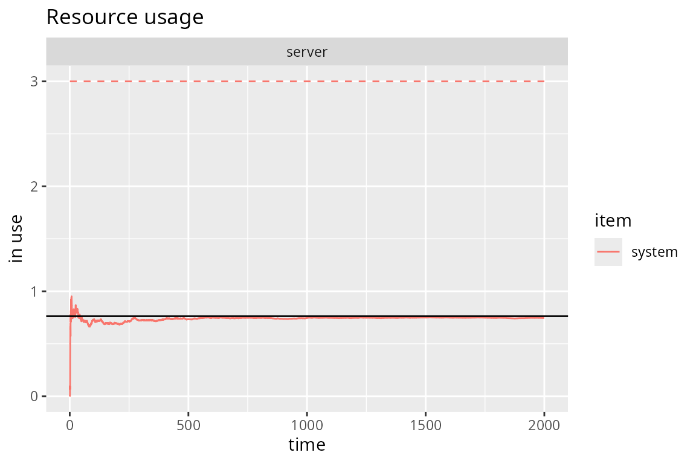

Queueing Systems
Iñaki Ucar
2018-11-09
Source:vignettes/simmer-06-queueing.Rmd
simmer-06-queueing.RmdM/M/c/k systems
In Kendall’s notation, an M/M/c/k system has exponential arrivals (M/M/c/k), a \(c\) servers (M/M/c/k) with exponential service time (M/M/c/k) and an \(k-c\) positions in queue (M/M/c/k). For instance, a router may have several processors to handle packets, and the in/out queues are necessarily finite.
This is the simulation of an M/M/2/3 system (2 server, 1 position in queue). Note that the trajectory is identical to an M/M/1 system (one server, infinite queue).
lambda <- 3
mu <- 4
mm23.trajectory <- trajectory() %>%
seize("server", amount=1) %>%
timeout(function() rexp(1, mu)) %>%
release("server", amount=1)
mm23.env <- simmer() %>%
add_resource("server", capacity=2, queue_size=1) %>%
add_generator("arrival", mm23.trajectory, function() rexp(1, lambda)) %>%
run(until=2000)There are rejections when the queue is full.
mm23.arrivals <- get_mon_arrivals(mm23.env)
rejection_rate <- mm23.arrivals %>%
dplyr::summarise(rejection_rate = sum(!finished)/length(finished)) %>%
dplyr::pull(rejection_rate)
rejection_rate
#> [1] 0.04714804By solving the balance equations for this system, we obtain the following:
\[ \begin{aligned} p_0 &= \left[ \sum_{n=0}^{c-1}\frac{r^n}{n!} + \sum_{n=c}^{k}\frac{r^n}{c!c^{n-c}} \right]^{-1}\\ N &= \sum_{n=0}^{\infty}nP_n = p_0\left(\sum_{n=0}^{c-n}\frac{nr^n}{n!} + \sum_{n=c}^{k}\frac{nr^n}{c!c^{n-c}}\right) \end{aligned} \]
where \(r=\lambda/\mu\). Finally, we can see how the simulation quickly converges to the theoretical average number of customers in the system \(N\):
# Theoretical value
rho <- lambda/mu
div <- 1 / c(1, 1, factorial(2) * 2^(2:3-2))
mm23.N <- sum(0:3 * rho^(0:3) * div) / sum(rho^(0:3) * div)
# Evolution of the average number of customers in the system
plot(mm23.env, "resources", "usage", "server", items="system") +
geom_hline(yintercept=mm23.N)
#> Warning: 'plot.simmer' is deprecated.
#> Use 'plot(get_mon_resources(x))' instead.
#> See help("Deprecated")
Queueing Networks
Let us consider the following network of queues (example taken from Grotto Networking):

A network of queues.
There are three exponential generators (\(\lambda_1\), \(\lambda_2\), \(\lambda_4\)) that inject messages with exponential size of mean 100 bytes. There are four M/D/1 queues with a deterministic rate equal to 220 bytes/s. There is a 25% probability that messages from \(\lambda_1\) are dropped before the second queue, and a fork 35/65% for the output of the second queue to reach queues 3 and 4. We are interested, for instance, in the accumulated waiting time for messages entering queue 1 and exiting queue 3 or 4.
The original author of this example, Greg M. Bernstein, simulated this problem with this Python code. We’ll start by setting up the main constants and a couple of functions to set the message size and seize an M/D/1 queue:
mean_pkt_size <- 100 # bytes
lambda1 <- 2 # pkts/s
lambda3 <- 0.5 # pkts/s
lambda4 <- 0.6 # pkts/s
rate <- 2.2 * mean_pkt_size # bytes/s
# set an exponential message size of mean mean_pkt_size
set_msg_size <- function(.)
set_attribute(., "size", function() rexp(1, 1/mean_pkt_size))
# seize an M/D/1 queue by id; the timeout is function of the message size
md1 <- function(., id)
seize(., paste0("md1_", id), 1) %>%
timeout(function() get_attribute(env, "size") / rate) %>%
release(paste0("md1_", id), 1)The next step is to set up the three points of attachment for our generators:
to_queue_1 <- trajectory() %>%
set_msg_size() %>%
md1(1) %>%
leave(0.25) %>%
md1(2) %>%
branch(
function() (runif(1) > 0.65) + 1, continue=c(F, F),
trajectory() %>% md1(3),
trajectory() %>% md1(4)
)
to_queue_3 <- trajectory() %>%
set_msg_size() %>%
md1(3)
to_queue_4 <- trajectory() %>%
set_msg_size() %>%
md1(4)Finally, we prepare and run the simulation environment with the resources and generators required:
env <- simmer()
for (i in 1:4) env %>%
add_resource(paste0("md1_", i))
env %>%
add_generator("arrival1_", to_queue_1, function() rexp(1, lambda1), mon=2) %>%
add_generator("arrival3_", to_queue_3, function() rexp(1, lambda3), mon=2) %>%
add_generator("arrival4_", to_queue_4, function() rexp(1, lambda4), mon=2) %>%
run(4000)
#> simmer environment: anonymous | now: 4000 | next: 4000.06543005082
#> { Monitor: in memory }
#> { Resource: md1_1 | monitored: TRUE | server status: 1(1) | queue status: 16(Inf) }
#> { Resource: md1_2 | monitored: TRUE | server status: 0(1) | queue status: 0(Inf) }
#> { Resource: md1_3 | monitored: TRUE | server status: 1(1) | queue status: 0(Inf) }
#> { Resource: md1_4 | monitored: TRUE | server status: 0(1) | queue status: 0(Inf) }
#> { Source: arrival1_ | monitored: 2 | n_generated: 7978 }
#> { Source: arrival3_ | monitored: 2 | n_generated: 1978 }
#> { Source: arrival4_ | monitored: 2 | n_generated: 2395 }In the analysis, we filter arrivals from generator 1 that reach queues 3 and 4, and we examine the average waiting time and the total number of messages:
res <- get_mon_arrivals(env, per_resource = TRUE) %>%
dplyr::select(name, resource) %>%
dplyr::filter(resource %in% c("md1_3", "md1_4"))
arr <- get_mon_arrivals(env) %>%
dplyr::mutate(waiting_time = end_time - (start_time + activity_time),
generator = regmatches(name, regexpr("arrival[[:digit:]]", name))) %>%
dplyr::left_join(res) %>%
dplyr::group_by(generator, resource)
#> Joining, by = "name"
dplyr::summarise(arr, average = sum(waiting_time) / n())
#> # A tibble: 5 x 3
#> # Groups: generator [?]
#> generator resource average
#> <chr> <chr> <dbl>
#> 1 arrival1 md1_3 5.16
#> 2 arrival1 md1_4 4.93
#> 3 arrival1 <NA> 3.83
#> 4 arrival3 md1_3 0.704
#> 5 arrival4 md1_4 0.434
get_n_generated(env, "arrival1_") + get_n_generated(env, "arrival4_")
#> [1] 10373
dplyr::count(arr)
#> # A tibble: 5 x 3
#> # Groups: generator, resource [5]
#> generator resource n
#> <chr> <chr> <int>
#> 1 arrival1 md1_3 3838
#> 2 arrival1 md1_4 2164
#> 3 arrival1 <NA> 1958
#> 4 arrival3 md1_3 1976
#> 5 arrival4 md1_4 2394